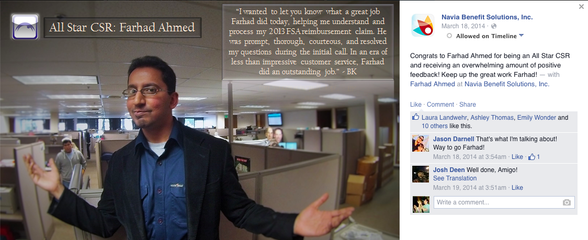

About
Driven by a passion for software and web app development, I graduated from Code Fellows' CS & Web Development Bootcamp as well as their Full-Stack JavaScript bootcamp. I am currently TA-ing the same JS course.
After graduating from the University of Washington, Seattle, my technical journey began at Flex-Plan Services where I undertook side projects with the company's software development team. This was done outside of my normal work hours.
These projects have involved minor fixes/updates to the core line-of-business application for the company. These features are now used by an entire mid-sized company.
I simultaneously began a C# certification program at Bellevue College. Dissatisfied with the slow learning pace, I left my job to pursue my passion for programming. It was then that I found Code Fellows where I completed every JavaScript course they offered and then became a Teacher's Assistant in their Full-Stack JavaScript bootcamp.
Experience
Teaching Assistant at Code Fellows
August 2015 - Present | Seattle, WA
- Assist in teaching Full-Stack JavaScript bootcamp
- Proactively assis student learning in-person and online by answering questions and ensuring students have a solid understanding of concepts covered in class.
- Maintain solid understanding of course concepts such as test-driven-development, task automation with Gulp, and advanced data structures and algorithms.
- Contribute to the curriculum as requested by instructor.
- Evaluate student assignments.
Full-Stack JavaScript Tutor at WyzAnt
June 2015 - Present | Bellevue, WA
- Privately tutor students from 6th grade to college grads in topics including HTML & CSS, JavaScript & jQuery, and Node.js.
Substitute English Teacher at Best In Class Education
August 2014 - September 2015 | Seattle, WA
- Teach English and essay writing to classrooms of students from K-12.
Development Projects Assistant / CSR at Flex-Plan Services
October 2013 - August 2014 | Bellevue, WA
- Help development team implement updates/fixes to core line-of-business application for the company.
- Basic enhancements to core LoB application written in C#; added ability to invoke context-sensitive help file. This involved creating an object within a new class that would access a .chm file. Within each form I then added a keyDown event to invoke the right page in the .chm file when user clicks "F1." The idea was that this would be helpful for new hires.
- Work directly with customers through phone and email to respond to queries about their FSA and HSA.
- Commended for exceptional customer service and communication skills. View the commendation by clicking here or on the image below.

English Teacher at Best In Class Education
February 2013 - December 2013 | Seattle, WA
- Teach English and essay writing to classrooms of students from K-12.